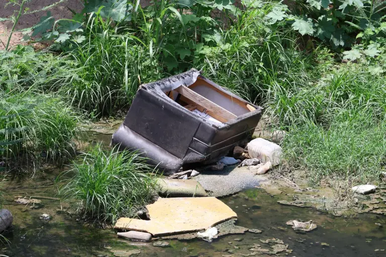
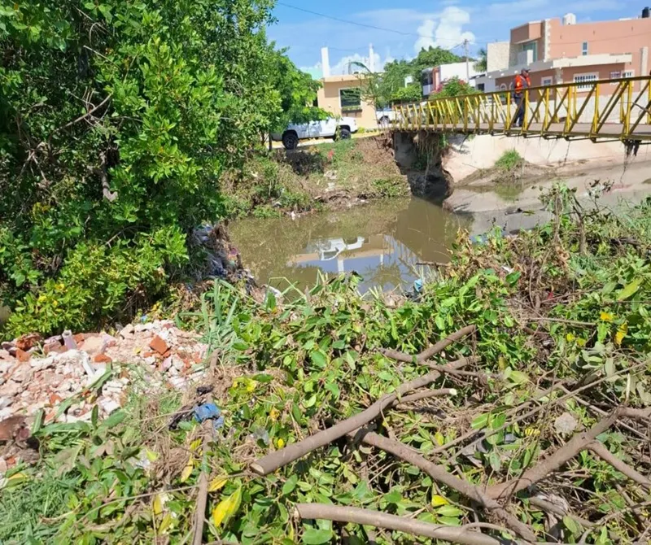
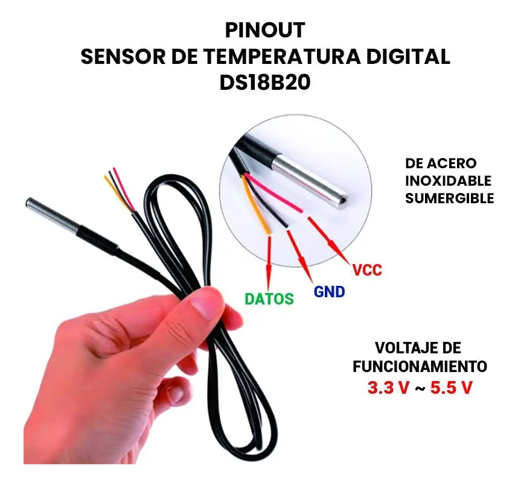
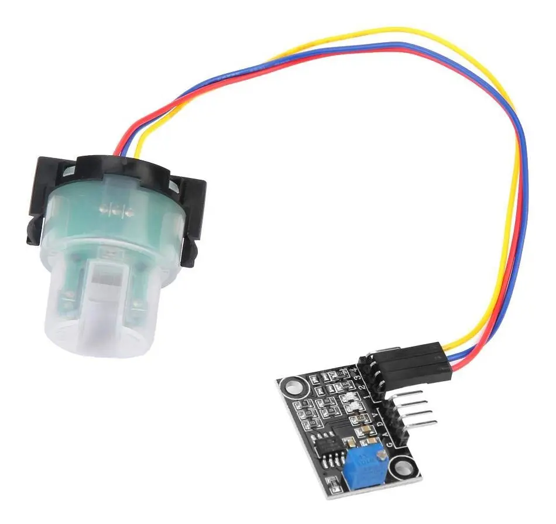
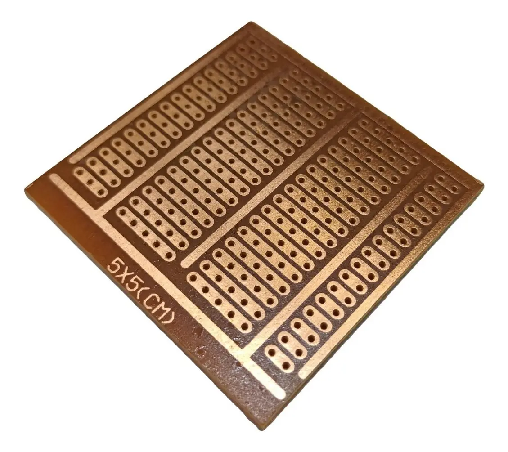
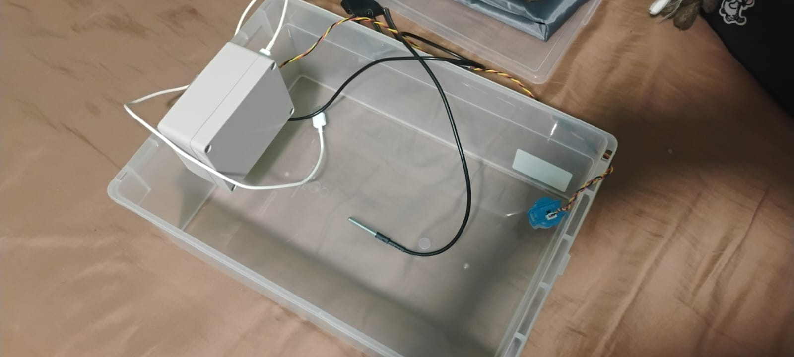
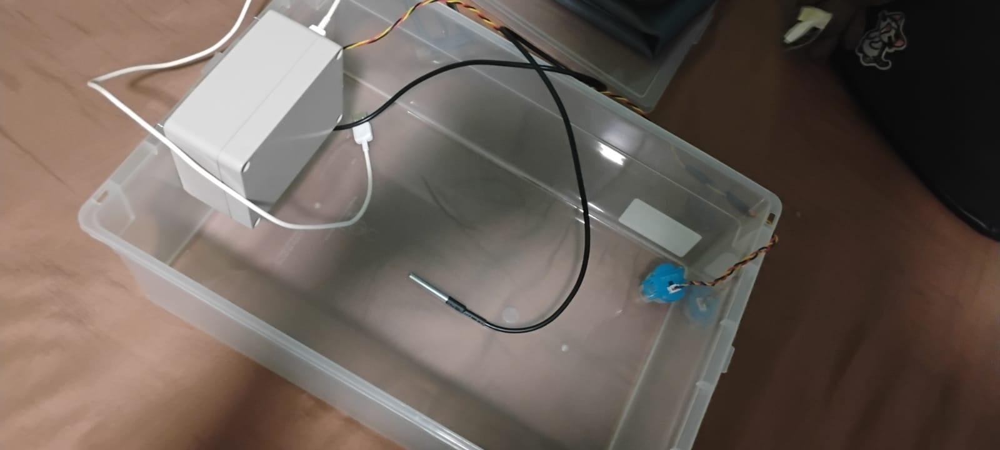
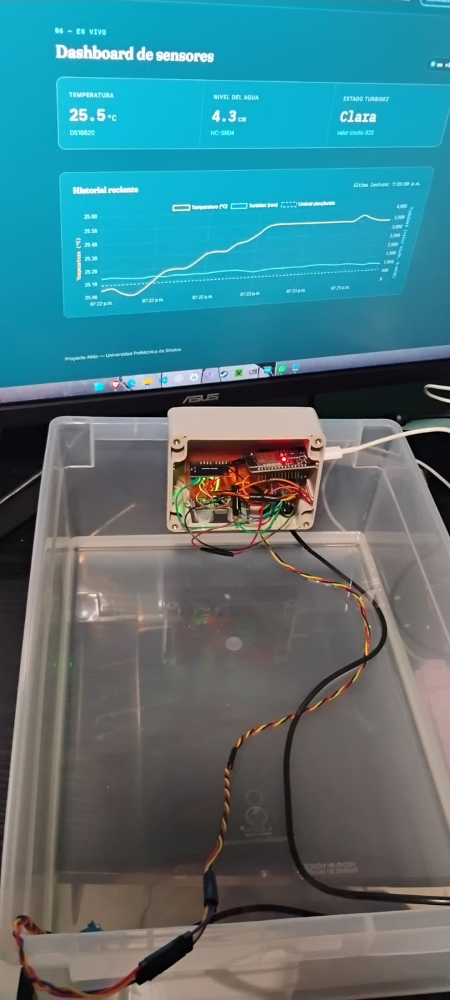
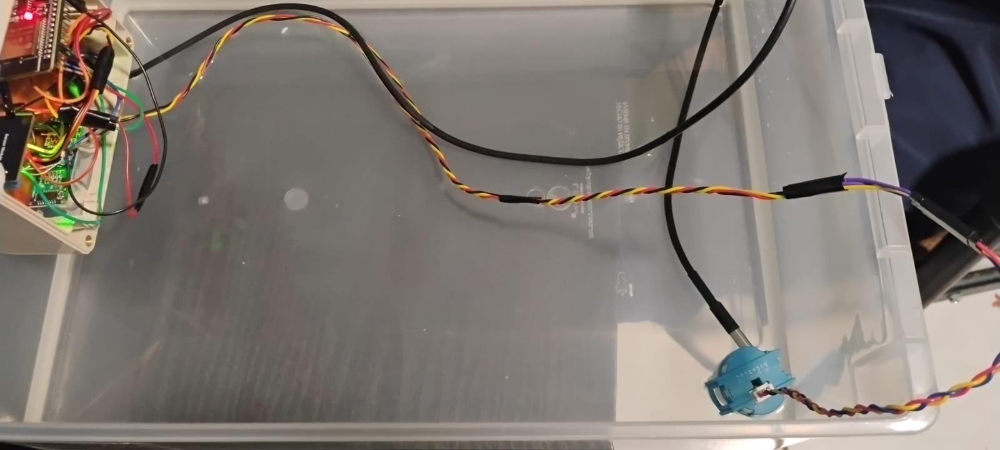
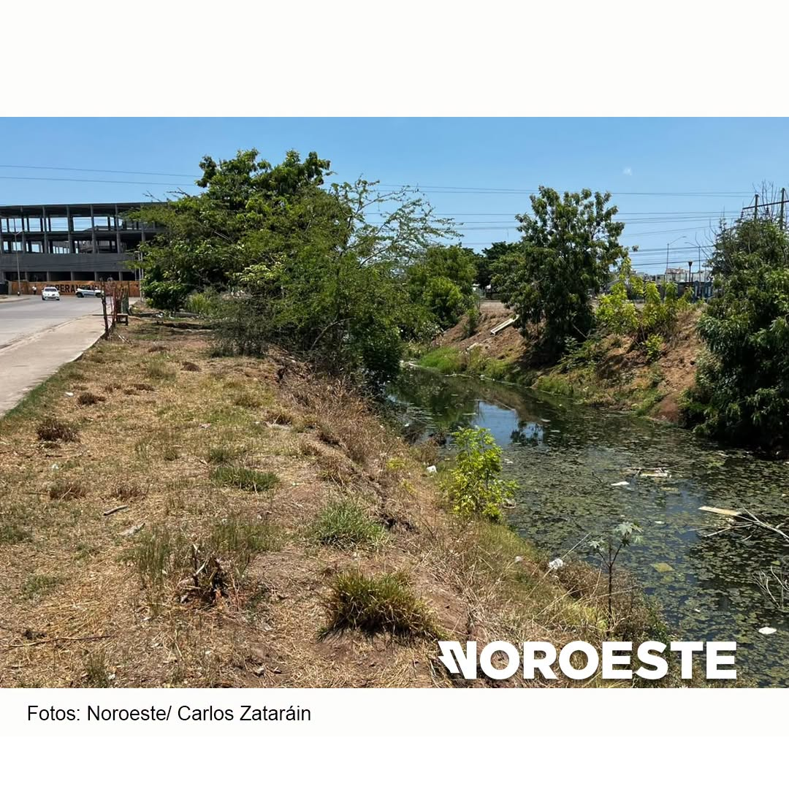

Sensores instalados en el Arroyo Jabalines miden temperatura, nivel y turbidez del agua, y transmiten cada lectura a este panel en tiempo real.
El arroyo Jabalines, en el tramo bajo el puente de la avenida Clouthier entre La Foresta, Bugambilias y San Fernando, enfrenta acumulación constante de basura, maleza y aguas negras que le dan una coloración verdosa y mal olor, generando riesgo de fauna nociva y enfermedades como el dengue. A esto se suma que, en 2025, el Ayuntamiento modificó el trazo del cauce sin aviso previo a los vecinos, lo que —según denuncias— aumentó el riesgo de inundación para varias colonias cercanas. Más recientemente, se ha planteado podar el manglar del arroyo como medida contra inundaciones, propuesta que ambientalistas cuestionan por el papel del manglar como barrera natural. Ante la falta de datos objetivos y continuos sobre la condición del agua, este proyecto busca dar seguimiento en tiempo real a su calidad.


Un sistema IoT con ESP32 que mide temperatura, nivel de agua y turbidez del Arroyo Jabalines, y envía cada lectura a un servidor propio para su consulta en tiempo real.
Proyecto desarrollado como parte de la carrera de Ingeniería en Tecnología de la Información en la Universidad Politécnica de Sinaloa.
Sensores DS18B20, HC-SR04 y un módulo de turbidez conectados a un ESP32, que transmite los datos por HTTP a un backend en Node.js + MySQL alojado en AWS.







"Ver el arroyo por años y no tener forma de saber qué tan contaminado estaba, fue lo que nos empujó a construir algo que sí diera respuestas."
"Calibrar el sensor de turbidez nos enseñó que los datos reales casi nunca son tan limpios como en el papel, pero por eso valen más."
"Más allá de la calificación, Atlán es la primera vez que sentimos que un proyecto de la escuela puede servirle de verdad a la comunidad."
"Trabajar en Atlán nos obligó a dejar la teoría y resolver problemas reales de cableado, calibración y conectividad en campo."

Foto: Noroeste / Carlos Zataráin